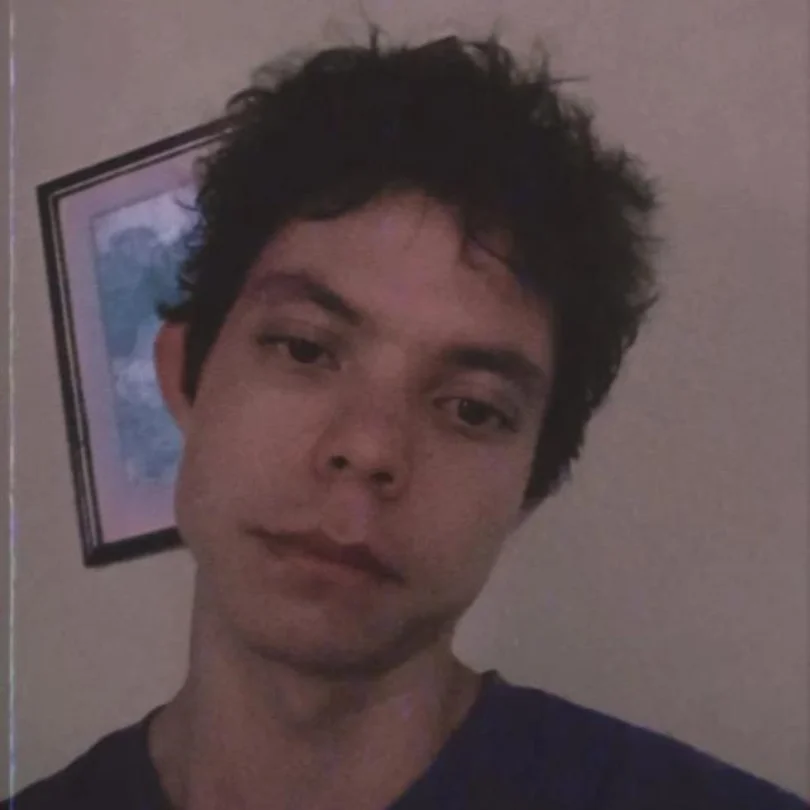

Transiago
Santiago Sebastian Ortega Maya (nacido el 24 de octubre del 2000 ), más conocido como Transiago, es un esclavo del sistema ecuatoriano, futuro boomer y lacra social.
| Transiago | |
|---|---|
|
 Foto obtenida del Whatsapp personal del transiago |
|
| Nacimiento |
Santiago Sebastian Ortega Maya 24 octubre , 2000 Quito, Ecuador |
| Número de cédula | 1754 475513 |
| Número de celular | 0963431471 |
| Dirección | N53- 116, Gerardo Chiriboga y Capitán Ramón Borja |
| Defunción | Desafortunadamente sigue con vida |
| Educación | Pontifica Universidad Católica del Ecuador |
| Ocupaciones | Desempleado · recepcionista |
| Años activos | 2025 - actualidad |
Santiago Sebastian Ortega Maya (nacido el 24 de octubre del 2000 ), más conocido como Transiago, es un esclavo del sistema ecuatoriano, futuro boomer y lacra social.
Es un esclavo del sistema ecuatoriano, conocido por su paupérrimo rendimiento en todo videojuego que juegue (véase Smite). Se autoproclama artista visual, aunque su habilidad sea comparable a la de Nick Vujicic. En una búsqueda desesperada de empleo ha recurrido a la prostitución, actividad que practica todos los sábados. Se habla sobre la existencia de un perfil en OnlyFans, aunque no se ha podido confirmar hasta el momento, probablemente por su baja popularidad.
A lo largo de su vida, desde su nacimiento hasta la fecha, ha experimentado circunstancias que afectaron su capacidad cognitiva. Esto ha provocado experiencias satánicas y homosexuales.
stat_minus_1
Vida temprana
Transiago "nació" en Quito, Ecuador, siendo su padre un ecuatoriano boomer temperamental con una mentalidad extremadamente cerrada y su madre una mujer.
Su "nacimiento" es fruto de la experimentación para desarrollar el primer homúnculo ecuatoriano. Sin embargo, el experimento fue interrumpido a los 5 meses de iniciar, la razón es desconocida, pero los rumores indican que el boomer temperamental estalló en cólera al enterarse que el homúnculo desarrolló ambos órganos sexuales.
Para evitar que el experimento fallara, se realizó un acto satánico en las instalaciones del Ministerio de Salud Pública. Aunque lograron el objetivo de mantenerlo con vida, el homúnculo desarrolló conciencia propia y tendencias transexualistas, motivo por el que fue descartado y obligado a vivir con sus padres.
stat_minus_1
Estudios
Su educación tanto primaria como secundaria empezó y terminó en el colegio Marco Salas Yépez "MASAY". Se habla de un posible abuso de naturaleza sexual por parte del tío Darwin.
Su educación superior inició en la UDLA con la carrera de Ingeniería en Sistemas, aunque por dificultades cognitivas y económicas no fue concluida. Terminó graduándose en la PUCE, aunque en una carrera de hippie. Actualmente es un desempleado profesional.
stat_minus_1
Relaciones Amorosas
Su primera y única experiencia amorosa fue con eletiv. Esta relación empezó en el colegio "MASAY", donde tuvo varios encuentros sexuales en diferentes partes de las instalaciones de la institución. Su relación tomó un giro inesperado al enterarse que eletiv buscaba desesperadamente el afecto femenino, esto llevó a transiago a convertirse en cuck a temprana edad.
Su relación amorosa, tormentosa pero apasionada, llegó a su fin cuando eletiv encontró refugio sexual en la religión. La razón que llevó a esta ruptura fue la falta de valor en la amistad del transiago.